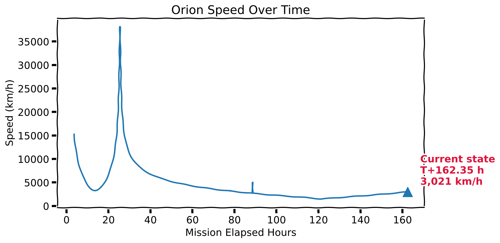
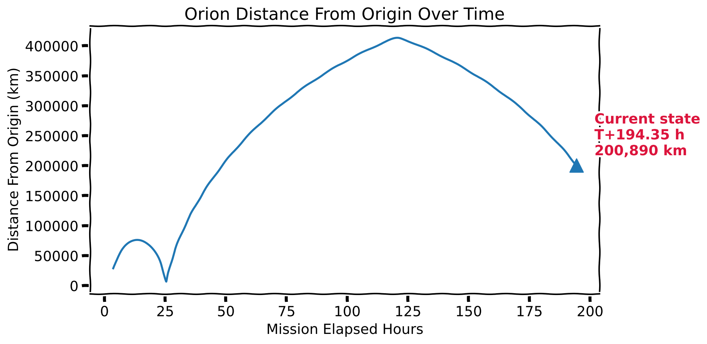

Artemis II Mission Overview
This page was generated from Databricks using a prototype FSDH pipeline that ingests,
parses, and visualizes CCSDS OEM trajectory data for Artemis II.
Mission summary
Latest Orion timestamp
2026-04-04 10:45:00
Latest speed (km/s)
1.179
Mission duration (hours)
56.75
Trajectory analytics
Orion speed over mission elapsed time.

Orion distance from origin over mission elapsed time.

Summary values generated from the Gold layer.
About this demo
This prototype shows how Databricks can be used in FSDH to ingest raw ephemeris-style
mission data, transform it into structured tables, and publish static outputs for the web.
2026-04-04